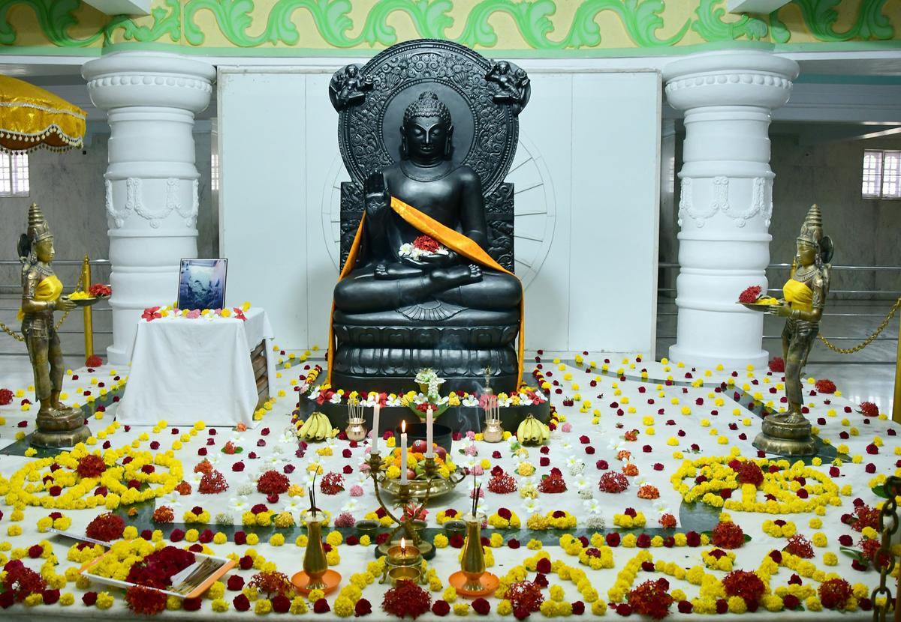

Shri Sharanabasaveshwara Temple
The history of the Sharana Basaveshwara Temple in Kalaburagi dates back centuries, dedicated to an 18th-century Lingayat saint known for his philosophy of Dasoha and Kayaka. The central shrine houses the samadhi (final resting place) of Sharana Basaveshwara. The temple's architecture is a blend of Hindu and Islamic styles, with detailed carvings on the walls, pillars, and arches, and it has been a spiritual and cultural center for centuries
Khwaja bande Nawaj Darga
Kalaburagi served as the first capital of the Bahmani Sultanate from 1347 to 1424 AD. Founded by Alauddin Bahman Shah, this powerful kingdom ruled the Deccan region for nearly 180 years. The city's strategic location made it a center of power, culture, and trade.
Shri Gavisiddeshwara Temple
In the vibrant city of Kalaburagi, the Gavisiddeshwara Temple stands as a living testament to centuries of devotion, culture, and natural wonder. Estimated to be between 300 to 500 years old, this sacred temple is not only a spiritual sanctuary but also home to a magnificent banyan tree believed to be over 500 years old — a rare fusion of heritage and nature.

Buddha Vihar
In the vibrant city of Kalaburagi, the Gavisiddeshwara Temple stands as a living testament to centuries of devotion, culture, and natural wonder. Estimated to be between 300 to 500 years old, this sacred temple is not only a spiritual sanctuary but also home to a magnificent banyan tree believed to be over 500 years old — a rare fusion of heritage and nature.
Bara Gazi Toph Kalaburagi
The Bara Gazi Toph proudly occupies the ramparts of the Gulbarga Fort, a majestic 14th-century citadel that once served as the Bahmani capital. Reaching the fort is a breeze, located in the heart of Kalaburagi city, easily accessible by road, rail, and air. The nearest railway station is Kalaburagi Railway Station, and the closest airport is Kalaburagi Airport. Once within the fort, prepare to be awestruck by the sheer presence of the Bara Gazi Toph, standing sentinel against the backdrop of history.
Sri Vaishnodevi Temple
The Sri Vaishnodevi Devasthana in Kalaburagi is a temple built in the form of a cave, replicating the famous Vaishno Devi Temple in Jammu. It is a relatively recent addition to the city's tourist attractions, designed by a devotee after his wishes were fulfilled by Mata Vaishnodev